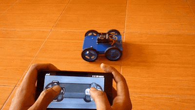

Hello,I am Badal .
i am a passionate

PROJECTS
LINE FOLLOWING
ROBOTLINE FOLLOWING ROBOT
The line follower robot is a mobile machine that can detect and follow the line drawn on the floor. the path is predefined and can be either visible like a black line on a white surface

BLUETOOTH CONTROLLED
ROBOTBLUETOOTH CONTROLLED ROBOT
Bluetooth controlled Robot is controlled by using Android mobile phone only needs to touch button in android phone to control the Robot in forward, backward, left and right directions
SKILLS
- WEB DEVELOPEMENT
- C++ AND DSA
- PYTHON
- PHOTOSHOP